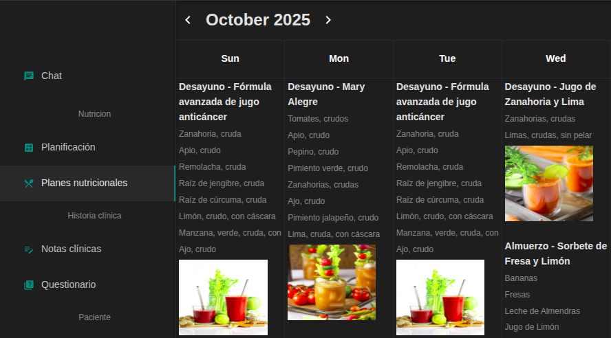

Hola, mi nombre es
Jonathan Díaz
Construyo software personalizado y a medida
Soy desarrollador de software con un enfoque en el producto, funcionalidades y el negocio de las personas
Acerca de mi
Disfruto resolver problemas de las personas usando código y construyendo aplicaciones. Mi objetivo es siempre construir productos y soluciones que proporcionen una experiencia única.

Aquí estan las tecnologías con las que estado trabajando recientemente:
- Node.js
- Nest.js
- React.js
- MongoDB
- PostgreSQL
- Cloudflare
- AWS
Proyectos construidos

Software para nutricionistas
Software especializado para nutricionistas destinado a acelerar la creación de planes nutricionales de los pacientes.
Permite también guardar y gestionar los pacientes, creación de recetas personalizadas, monitorear proceso del paciente, chat en tiempo real.
Permite también guardar y gestionar los pacientes, creación de recetas personalizadas, monitorear proceso del paciente, chat en tiempo real.
- Nest.js
- React.js
- MongoDB
- AWS

Simulación de multiples votos electorales
Una aplicación para hacer votaciones para las zonas y la cantidad de veces que uno desee, teniendo como resultado final las estadísticas de votación. En esta aplicación se puede retornar a la zona que votaste y continuar añadiendo votos. Esto fue posible al uso de tablas hash para cada zona.
- HTML
- CSS
- Angular
Tienes un proyecto en mente. Estaré encantado de oirte.
Correo Electrónico:
jonathan.a.diaz.m@gmail.com
Whattsap
+51 910534676